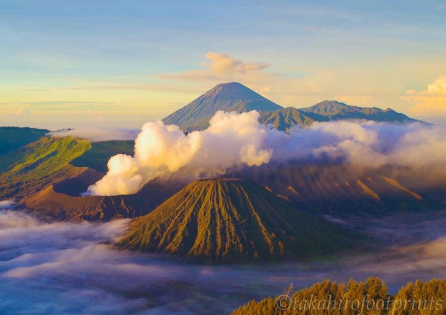
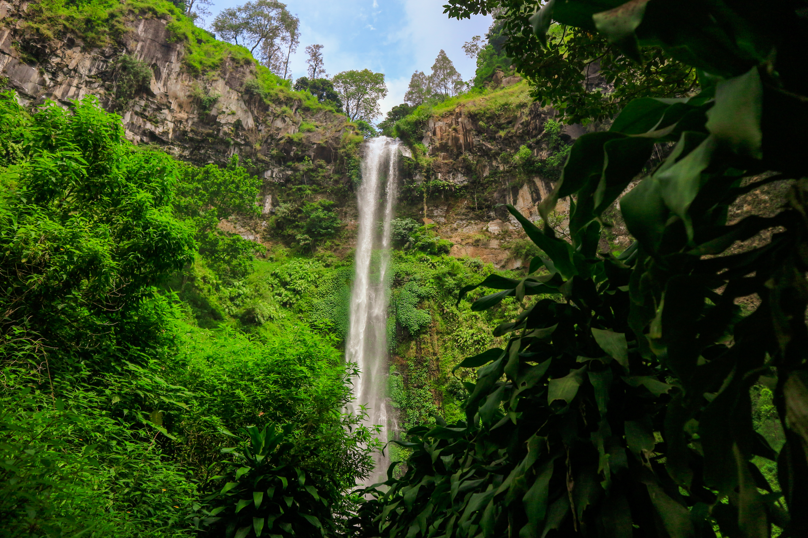

| Beranda | Wisata | Galeri |
|
 Gunung BromoGunung Bromo merupakan salah satu tempat wisata terkenal yang berada di Jawa Timur |

Kawah IjenKawuh ijen merupakan salah satu tempat wisata terkenal yang berada di Jawa Timur |
 Air Terjun Coban RondoAir terjun Coban Rondo merupakan salah satu tempat wisata terkenal yang berada di Jawa Timur |
🎶Musik Nusantara
Silahkan Dengarkan musik sambil menikmati informasi wisata Iindonesia
🐨Wonderland Indonesia
silahkan melihat video berikut sambil menikmati informasi wisata indonesia